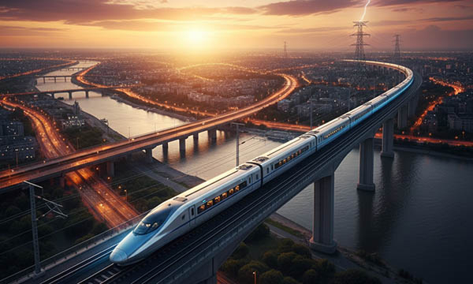

Railway systems form a critical backbone of transport infrastructure, connecting cities, regions, and countries while enabling efficient passenger and freight movement. Across Germany, France, Italy, Switzerland, the United Kingdom, Norway, Austria, Poland, and the Benelux countries (Belgium, Netherlands, Luxembourg), railway networks rely on precise installation, organized components, and ongoing maintenance to ensure safety, reliability, and operational efficiency.
Tracks, signaling systems, electrical networks, substations, and safety equipment must all work together seamlessly, while being exposed to weather, vibration, and heavy traffic loads. Clear and durable signage and labeling are essential to support inspections, repairs, and safe daily operation of railway networks.
Industrial railway environments face challenging conditions, including moisture, temperature fluctuations, mechanical stress, dust, and UV exposure. To navigate these risks, railway operators require high-quality, long-lasting signage, stainless steel cable markers, warning labels, type plates, directional signs, and equipment identification labels.
At SignXpert, we specialize in industrial-grade signage and labeling solutions designed to withstand these harsh environments, ensuring that railway systems across Germany and Europe remain safe, organized, and fully operational.
Railway Installation: Establishing a Safe and Efficient Transport Network
Installing railway infrastructure is a complex and safety-critical process. In Germany, France, Italy, Switzerland, the UK, Norway, Austria, Poland, and the Benelux countries, precise alignment of tracks, placement of signaling systems, integration of electrical networks, and installation of safety equipment are essential.
Mistakes during installation can lead to delays, operational disruptions, or safety hazards.
Professional signage and labeling are critical during installation. High-visibility warning signs, cable markers, engraved type plates, and equipment labels create a structured environment where components are clearly identified.
Clear labeling ensures that technicians can install electrical systems, signaling equipment, and mechanical components accurately and safely.
In Germany and Austria, EU standards require strict adherence to safety labeling, while Poland, Norway, and the UK emphasize precision and reliability in complex railway projects.
By implementing robust signage and labeling during installation, railway operators lay the groundwork for a network that is safe, efficient, and reliable across Europe.
Maintenance of Railway Systems: Ensuring Long-Term Reliability
Railway systems require continuous and careful maintenance to remain safe and fully operational. Tracks, switches, signaling systems, substations, and power supply components are subjected to constant wear from heavy traffic, environmental conditions, and mechanical stress.
In Germany, France, Italy, Switzerland, the UK, Norway, Austria, Poland, and the Benelux countries, timely maintenance is critical to prevent outages, reduce repair costs, and maintain passenger and freight safety.
Industrial signage and stainless steel cable labeling simplify maintenance workflows.
Clearly marked cables, pipelines, electrical junctions, and critical machinery allow maintenance teams to quickly identify components and take action without errors.
Warning labels highlight high-voltage areas, restricted zones, and hazard points, improving technician safety and operational efficiency.
High-durability engraved plates, stainless steel tags, laminated decals, and UV-resistant signs remain legible under harsh conditions, ensuring long-term reliability.
Proper labeling reduces downtime, streamlines repair processes, and supports compliance with European railway safety regulations, contributing to a safer, more efficient network.
Safety and Organization: The Role of Industrial Signage in Railway Operations
Safety is a top priority in railway operations, where both installation and maintenance involve complex and high-risk systems.
Clear signage and robust stainless steel cable labeling are essential tools for maintaining safe and organized railway environments.
Warning signs indicate hazard zones, emergency exits, and high-voltage areas, while cable markers and equipment labels simplify the identification of signaling and electrical systems.
Durable materials, such as stainless steel, ensure that labeling withstands moisture, vibration, corrosion, and temperature extremes while remaining clear and legible over time.
Across Germany, France, Italy, Switzerland, the UK, Norway, Austria, Poland, and the Benelux countries, professional signage supports quick troubleshooting, effective maintenance, and safe daily operation.
By integrating high-performance labeling, railway operators minimize the risk of accidents, improve workflow efficiency, and maintain regulatory compliance.
Clear and durable signage ensures that all personnel can navigate railway infrastructure safely and effectively.
Why SignXpert is the Trusted Partner for Railway Signage in Germany and Europe
SignXpert provides tailored industrial signage and stainless steel cable labeling solutions for railway operators across Germany, France, Italy, Switzerland, the United Kingdom, Norway, Austria, Poland, and the Benelux countries.
Our products, including engraved type plates, safety decals, cable markers, warning labels, directional signs, and operational markers, are designed to withstand moisture, extreme temperatures, mechanical stress, UV exposure, and chemical corrosion.
With our user-friendly online customization platform, railway operators can quickly design and order signage suited to specific projects, ensuring precision, clarity, and long-term durability.
Fast production and reliable delivery across Europe allow maintenance and installation work to proceed without delays.
By choosing SignXpert, railway operators gain durable, high-performance signage that enhances safety, streamlines operations, and supports compliance.
This helps maintain reliable, efficient, and safe railway infrastructure throughout Germany and Europe.